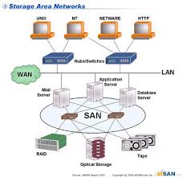

Una Storage Area Network (SAN) é una rete o parte di una rete ad alta velocitá di trasmissione (generalmente Gigabit/sec)
costituita esclusivamente da dispositivi di memorizzazione di massa, in alcuni casi anche di tipi e tecnologie differenti.
Il suo scopo é quello di rendere tali risorse di immagazzinamento (storage) disponibili per qualsiasi computer(generalmente
application server e DDBB server) connesso ad essa. I protocolli attualmente piú diffusi, usati per la comunicazione
all'interno di una SAN, sono FC (Fibre Channel) ed iSCSI (Internet SCSI).

Vantaggi
Le aziende devono poter accedere ai dati in modo rapido e sicuro e quindi la filosofia dell'architettura SAN é quella di
poter integrare tutte le caratteristiche dei tradizionali sistemi di memorizzazione:
- Alte prestazioni
- Alta disponibilitá
- Scalabilitá
- Facilitá di gestione